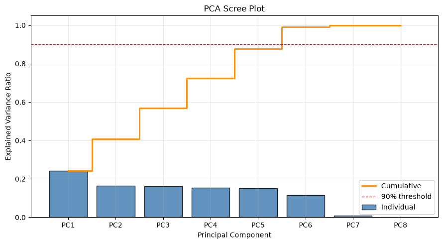
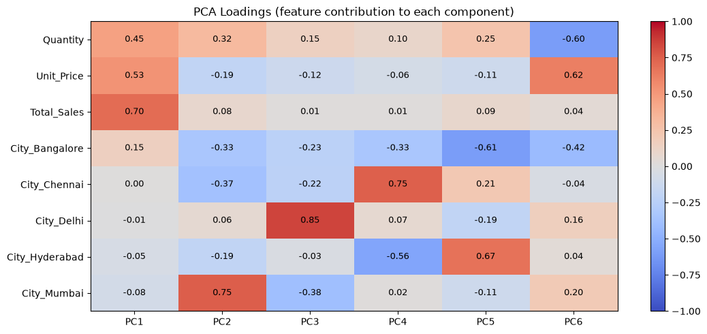
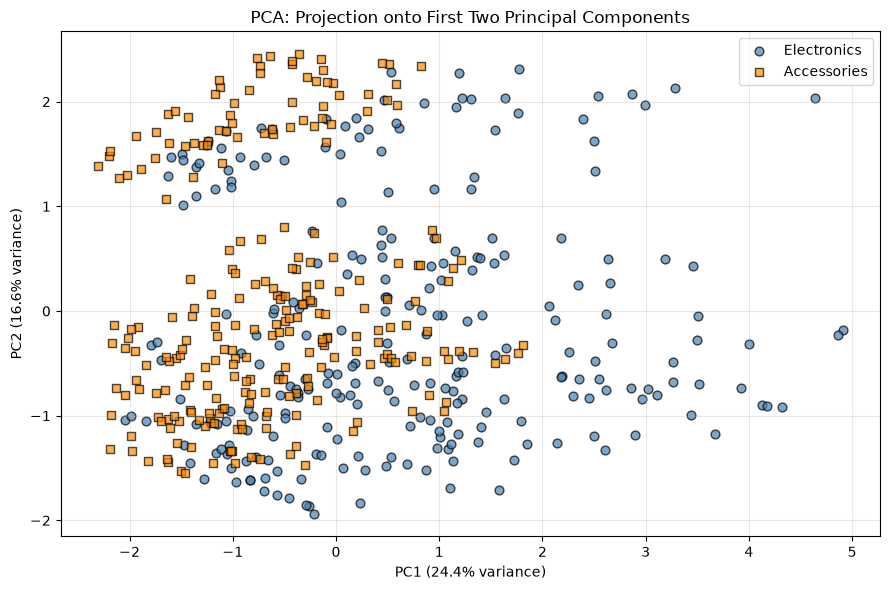

Retail Sales Insights Using Clustering and PCA
Principal Component Analysis (PCA)
Dataset: store_sales_dataset.csv
We reduce the dimensionality of the data with PCA:
- PCA from scratch (covariance matrix + eigen decomposition with NumPy)
- PCA with scikit-learn (to verify the manual result)
We then look at the explained variance, component loadings, reconstruction error and a 2D projection of the data.
1. Import libraries
Show code
import pandas as pd
import numpy as np
import matplotlib.pyplot as plt
from sklearn.preprocessing import StandardScaler
from sklearn.decomposition import PCA
%matplotlib inline2. Load data
Show code
df = pd.read_csv("store_sales_dataset.csv")
print(f"Dataset size: {len(df)} rows")
df.head()Dataset size: 500 rows
| Order_ID | Product | Category | City | Quantity | Unit_Price | Total_Sales | |
|---|---|---|---|---|---|---|---|
| 0 | 101 | Smartphone | Electronics | Hyderabad | 5 | 12450 | 62250 |
| 1 | 102 | USB Cable | Accessories | Delhi | 2 | 4550 | 9100 |
| 2 | 103 | Television | Electronics | Mumbai | 38 | 11800 | 448400 |
| 3 | 104 | Power Bank | Accessories | Hyderabad | 12 | 6750 | 81000 |
| 4 | 105 | Webcam | Accessories | Bangalore | 34 | 2950 | 100300 |
3. Prepare features (numerical columns + one-hot encoded City)
Show code
numeric_features = ["Quantity", "Unit_Price", "Total_Sales"]
X = pd.concat(
[df[numeric_features], pd.get_dummies(df["City"], prefix="City", dtype=float)],
axis=1,
)
feature_names = list(X.columns)
print(f"Features used ({len(feature_names)}):")
for name in feature_names:
print(f" {name}")Features used (8): Quantity Unit_Price Total_Sales City_Bangalore City_Chennai City_Delhi City_Hyderabad City_Mumbai
4. Standardize the data (PCA is sensitive to scale)
Show code
scaler = StandardScaler()
X_scaled = scaler.fit_transform(X)
print("Data standardized (mean = 0, std = 1).")Data standardized (mean = 0, std = 1).
5. PCA from scratch (Covariance matrix + Eigen decomposition)
Covariance matrix
Show code
cov_matrix = np.cov(X_scaled, rowvar=False)
pd.DataFrame(cov_matrix, index=feature_names, columns=feature_names).round(3)| Quantity | Unit_Price | Total_Sales | City_Bangalore | City_Chennai | City_Delhi | City_Hyderabad | City_Mumbai | |
|---|---|---|---|---|---|---|---|---|
| Quantity | 1.002 | -0.008 | 0.637 | -0.041 | -0.017 | 0.038 | -0.023 | 0.034 |
| Unit_Price | -0.008 | 1.002 | 0.679 | 0.146 | 0.022 | -0.042 | -0.025 | -0.080 |
| Total_Sales | 0.637 | 0.679 | 1.002 | 0.080 | -0.005 | -0.005 | -0.026 | -0.035 |
| City_Bangalore | -0.041 | 0.146 | 0.080 | 1.002 | -0.216 | -0.224 | -0.203 | -0.242 |
| City_Chennai | -0.017 | 0.022 | -0.005 | -0.216 | 1.002 | -0.266 | -0.241 | -0.287 |
| City_Delhi | 0.038 | -0.042 | -0.005 | -0.224 | -0.266 | 1.002 | -0.250 | -0.297 |
| City_Hyderabad | -0.023 | -0.025 | -0.026 | -0.203 | -0.241 | -0.250 | 1.002 | -0.269 |
| City_Mumbai | 0.034 | -0.080 | -0.035 | -0.242 | -0.287 | -0.297 | -0.269 | 1.002 |
Eigenvalues and explained variance
Show code
eigenvalues, eigenvectors = np.linalg.eigh(cov_matrix)
# One-hot City columns always sum to 1, so one eigenvalue is ~0 (tiny negatives from rounding)
eigenvalues = np.clip(eigenvalues, 0, None)
order = np.argsort(eigenvalues)[::-1]
eigenvalues = eigenvalues[order]
eigenvectors = eigenvectors[:, order]
explained_ratio = eigenvalues / eigenvalues.sum()
cumulative_ratio = np.cumsum(explained_ratio)
pc_names = [f"PC{i + 1}" for i in range(len(eigenvalues))]
print(f" {'PC':<5} {'Eigenvalue':>12} {'Explained':>12} {'Cumulative':>12}")
for name, ev, ratio, cum in zip(pc_names, eigenvalues, explained_ratio, cumulative_ratio):
print(f" {name:<5} {ev:>12.4f} {ratio:>12.4f} {cum:>12.4f}")
n_components = int(np.searchsorted(cumulative_ratio, 0.90) + 1)
print(f"\nComponents needed to keep at least 90% variance: {n_components}")
X_pca_manual = X_scaled @ eigenvectors[:, :n_components]PC Eigenvalue Explained Cumulative PC1 1.9521 0.2435 0.2435 PC2 1.3291 0.1658 0.4093 PC3 1.2889 0.1608 0.5701 PC4 1.2435 0.1551 0.7252 PC5 1.2178 0.1519 0.8772 PC6 0.9176 0.1145 0.9916 PC7 0.0670 0.0084 1.0000 PC8 0.0000 0.0000 1.0000 Components needed to keep at least 90% variance: 6
Graph: Scree plot (explained variance)
Show code
x_pos = np.arange(1, len(eigenvalues) + 1)
plt.figure(figsize=(9, 5))
plt.bar(
x_pos,
explained_ratio,
color="steelblue",
edgecolor="black",
alpha=0.85,
label="Individual",
)
plt.step(
x_pos,
cumulative_ratio,
where="mid",
color="darkorange",
linewidth=2,
label="Cumulative",
)
plt.axhline(0.90, color="red", linestyle="--", linewidth=1, label="90% threshold")
plt.xticks(x_pos, pc_names)
plt.xlabel("Principal Component")
plt.ylabel("Explained Variance Ratio")
plt.title("PCA Scree Plot")
plt.legend()
plt.grid(True, alpha=0.3)
plt.tight_layout()
plt.show()
6. PCA using scikit-learn (verification)
Show code
pca = PCA(n_components=n_components)
X_pca = pca.fit_transform(X_scaled)
print("Explained variance ratio:")
for name, ratio in zip(pc_names, pca.explained_variance_ratio_):
print(f" {name}: {ratio:.4f}")
print(f"Total variance retained: {pca.explained_variance_ratio_.sum():.4f}")
# Eigenvector signs are arbitrary, so compare absolute values
match = np.allclose(np.abs(X_pca), np.abs(X_pca_manual), atol=1e-6)
print(f"\nManual PCA matches scikit-learn PCA: {match}")Explained variance ratio: PC1: 0.2435 PC2: 0.1658 PC3: 0.1608 PC4: 0.1551 PC5: 0.1519 PC6: 0.1145 Total variance retained: 0.9916 Manual PCA matches scikit-learn PCA: True
Principal component loadings (feature contribution)
Show code
loadings = pd.DataFrame(
pca.components_.T,
index=feature_names,
columns=pc_names[:n_components],
)
print("Top contributing feature for each component:")
for pc in loadings.columns:
top = loadings[pc].abs().idxmax()
print(f" {pc}: {top} ({loadings.loc[top, pc]:.4f})")
loadings.round(4)Top contributing feature for each component: PC1: Total_Sales (0.6970) PC2: City_Mumbai (0.7501) PC3: City_Delhi (0.8456) PC4: City_Chennai (0.7488) PC5: City_Hyderabad (0.6748) PC6: Unit_Price (0.6238)
| PC1 | PC2 | PC3 | PC4 | PC5 | PC6 | |
|---|---|---|---|---|---|---|
| Quantity | 0.4545 | 0.3193 | 0.1461 | 0.0979 | 0.2451 | -0.6041 |
| Unit_Price | 0.5253 | -0.1927 | -0.1218 | -0.0639 | -0.1101 | 0.6238 |
| Total_Sales | 0.6970 | 0.0795 | 0.0124 | 0.0105 | 0.0906 | 0.0411 |
| City_Bangalore | 0.1513 | -0.3340 | -0.2287 | -0.3291 | -0.6063 | -0.4166 |
| City_Chennai | 0.0044 | -0.3725 | -0.2205 | 0.7488 | 0.2142 | -0.0429 |
| City_Delhi | -0.0076 | 0.0606 | 0.8456 | 0.0656 | -0.1938 | 0.1628 |
| City_Hyderabad | -0.0535 | -0.1949 | -0.0324 | -0.5592 | 0.6748 | 0.0361 |
| City_Mumbai | -0.0760 | 0.7501 | -0.3829 | 0.0156 | -0.1148 | 0.2024 |
Graph: loadings heatmap
Show code
fig, ax = plt.subplots(figsize=(1.2 * n_components + 4, 5))
im = ax.imshow(loadings.values, cmap="coolwarm", vmin=-1, vmax=1, aspect="auto")
ax.set_xticks(range(n_components), loadings.columns)
ax.set_yticks(range(len(feature_names)), feature_names)
for i in range(len(feature_names)):
for j in range(n_components):
ax.text(j, i, f"{loadings.values[i, j]:.2f}", ha="center", va="center", fontsize=9)
fig.colorbar(im, ax=ax)
ax.set_title("PCA Loadings (feature contribution to each component)")
plt.tight_layout()
plt.show()
7. Transformed data and reconstruction error
Show code
print(f"Original shape: {X_scaled.shape}")
print(f"Transformed shape: {X_pca.shape}")
X_reconstructed = pca.inverse_transform(X_pca)
recon_error = np.mean((X_scaled - X_reconstructed) ** 2)
print(f"Reconstruction error (MSE, standardized units): {recon_error:.4f}")
pca_df = pd.DataFrame(np.round(X_pca, 4), columns=pc_names[:n_components])
pca_df.insert(0, "Category", df["Category"].values)
print("\nTransformed data (first 10 rows):")
pca_df.head(10)Original shape: (500, 8) Transformed shape: (500, 6) Reconstruction error (MSE, standardized units): 0.0084 Transformed data (first 10 rows):
| Category | PC1 | PC2 | PC3 | PC4 | PC5 | PC6 | |
|---|---|---|---|---|---|---|---|
| 0 | Electronics | -1.3576 | -1.0838 | -0.3196 | -1.6158 | 1.2939 | 0.9687 |
| 1 | Accessories | -2.1705 | -0.3079 | 1.9228 | 0.0347 | -0.8754 | 0.6723 |
| 2 | Electronics | 1.1950 | 2.2766 | -0.6654 | 0.1773 | 0.1851 | -0.4111 |
| 3 | Accessories | -1.4661 | -0.7105 | -0.1219 | -1.4985 | 1.5503 | 0.0552 |
| 4 | Accessories | -0.2568 | -0.3890 | -0.3143 | -0.7374 | -1.3189 | -2.7321 |
| 5 | Electronics | 1.3054 | 1.1653 | -1.2452 | -0.1713 | -0.5882 | 2.2396 |
| 6 | Electronics | -1.3582 | 1.1010 | -1.1676 | -0.1581 | -0.7626 | 1.5238 |
| 7 | Accessories | -0.9382 | 0.1213 | 2.0936 | 0.1567 | -0.5154 | 0.0626 |
| 8 | Accessories | -1.0876 | -0.3659 | 0.0407 | -1.3937 | 1.8098 | -0.6329 |
| 9 | Electronics | 0.8168 | -1.0160 | -0.6832 | -0.9517 | -1.7052 | -0.9063 |
8. Graph: data projected onto PC1 and PC2
Show code
pca_2d = PCA(n_components=2)
X_2d = pca_2d.fit_transform(X_scaled)
plt.figure(figsize=(9, 6))
styles = {
"Electronics": {"color": "steelblue", "marker": "o"},
"Accessories": {"color": "darkorange", "marker": "s"},
}
for category, style in styles.items():
mask = (df["Category"] == category).values
plt.scatter(
X_2d[mask, 0],
X_2d[mask, 1],
label=category,
color=style["color"],
marker=style["marker"],
edgecolor="black",
s=40,
alpha=0.7,
)
plt.xlabel(f"PC1 ({pca_2d.explained_variance_ratio_[0] * 100:.1f}% variance)")
plt.ylabel(f"PC2 ({pca_2d.explained_variance_ratio_[1] * 100:.1f}% variance)")
plt.title("PCA: Projection onto First Two Principal Components")
plt.legend()
plt.grid(True, alpha=0.3)
plt.tight_layout()
plt.show()